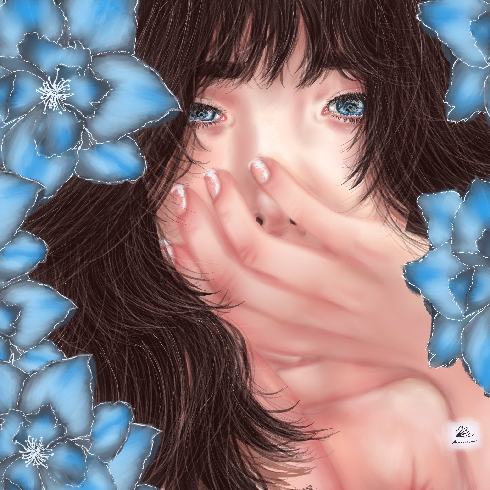

recruiter scan
Built to be beautiful first, then verifiable.
The site is designed so a recruiter can skim quickly, then go deeper into screenshots, architecture notes, GitHub links, demos, and the decisions behind each working system.
Computer Science student building real-time collaboration systems, C++ audio tools, interactive 3D environments, visualization engines, and polished frontend product experiences. I combine engineering discipline with design and music instincts to make ambitious ideas understandable, usable, and demo-ready.
The site is designed so a recruiter can skim quickly, then go deeper into screenshots, architecture notes, GitHub links, demos, and the decisions behind each working system.
Rachel Atkeison is a Computer Science student building real-time collaboration tools, C++ audio software, interactive environments, visualization systems, and polished frontend experiences for software engineering, creative technology, UI/front-end, and music technology roles.
My process is simple and disciplined: find the real problem, build the first honest version, explain the system clearly, then refine until the work becomes easier to use, evaluate, and improve.
Art, teaching, software, and learning are not separate parts of me. They are the way I approach problems with curiosity, patience, and care.
I came to software through curiosity, music, art, and teaching. My strongest work lives where the technical layer is real, the interface is readable, and the finished experience still feels human to the person using it.
I turn vague ideas into working prototypes, then keep shaping the structure until another person could understand it, use it, and build on it.
These are the strongest examples from my portfolio: real-time collaboration, C++ audio, Unity interaction, audio-reactive visualization, and MIDI intelligence. Each project shows what I built, what decisions mattered, and what kind of engineering growth it represents.
The projects are organized for fast review: choose a system, skim the stack, inspect the screenshot, then open the deeper proof for architecture, interaction, real-time behavior, visual design, and growth.
This section proves that the polish is not random decoration. It comes from years of practicing composition, hierarchy, mood, character, motion, and readable atmosphere.
My art practice taught me how to control attention, emotion, rhythm, and detail. Those same instincts help me design interfaces and creative tools that feel intentional instead of accidental.

A luminous floral portrait that captures the soft, magical direction behind the Aureine visual identity.
My AUREINE releases support my technical work because they train the same instincts audio and product teams need: structure, iteration, pacing, polish, emotional feedback, and creator-side empathy.
Because I make music, I notice timing, feedback, workflow friction, and whether a tool keeps a creator in flow. That perspective makes my audio and interface projects more grounded.
A cozy winter lofi release that brings composition, atmosphere, mixing, branding, and storytelling into one finished listening experience.
Bloom Circuit is my 18-song summer lofi album with a June 2026 release on all streaming platforms. It is brighter, warmer, and more playful than First Frost, built around blooming melodies, sparkling textures, soft floral energy, and a sunlit, gently game-like sense of motion. This space is ready for the final Spotify embed, visualizer, and launch links once the release is live.
Music strengthens the way I build. I notice timing, flow, polish, and emotional clarity, which helps in software, UI, creative technology, product work, and any role where the final experience matters as much as the implementation.
Songs need structure, sections, transitions, constraints, and revision, which is the same patience I bring to software architecture.
Music trained my ear for pacing, polish, emotional feedback, and the tiny details that make a product feel finished.
As a musician, I understand how audio tools should feel from the creator side, not only from the code side.
Public releases show that I can finish, package, present, and improve work beyond a private draft.
Every skill cluster connects to a project, course, tool, or habit I have practiced. The goal is to make my range easy to skim and easy to verify.
I want the skills section to feel earned. Systems, audio, UI, data, creative tech, and learning habits all point back to working projects and visible growth.
Each cluster connects tools to the kind of work I can build, explain, and keep growing.
Organized software that can grow beyond the first working version.
The same portfolio can support software engineering, creative technology, UI/front-end, audio software, and product-minded roles because the underlying strengths are consistent: architecture, clarity, iteration, and user empathy.
A systems team can look for architecture, a product team can look for clarity, a creative technology team can look for interaction, and an audio team can look for timing, synthesis, and musician empathy.
The quick facts behind the work, kept simple so the projects have room to speak for themselves.
This direction fits the part of me that likes turning unclear problems into stable, readable, working systems.
What I would bring: patience, curiosity, documentation, and the drive to make solutions understandable to the next person too.
The best way to reach me is direct. I am ready to learn quickly, contribute carefully, and bring real technical work, strong visual instincts, and sincere creative energy to the right team.
Email is the clearest first step. The surrounding links are there if you want to see more of my code, projects, design, art, or music.
Email me directly for internships, software roles, creative technology, UI/front-end, music technology, collaborations, or project conversations.
Summary
This shows the kind of real work I am ready to keep growing into.
Art description.